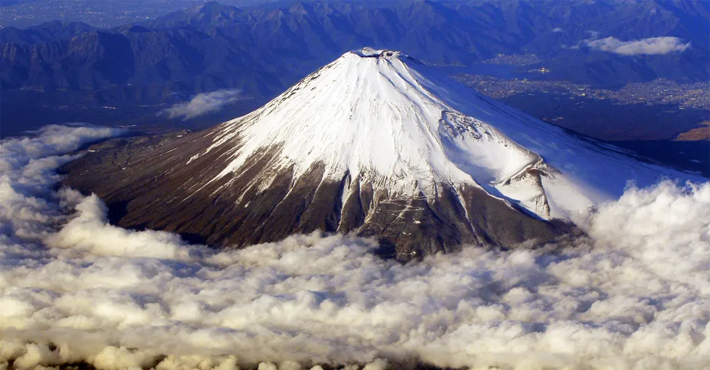
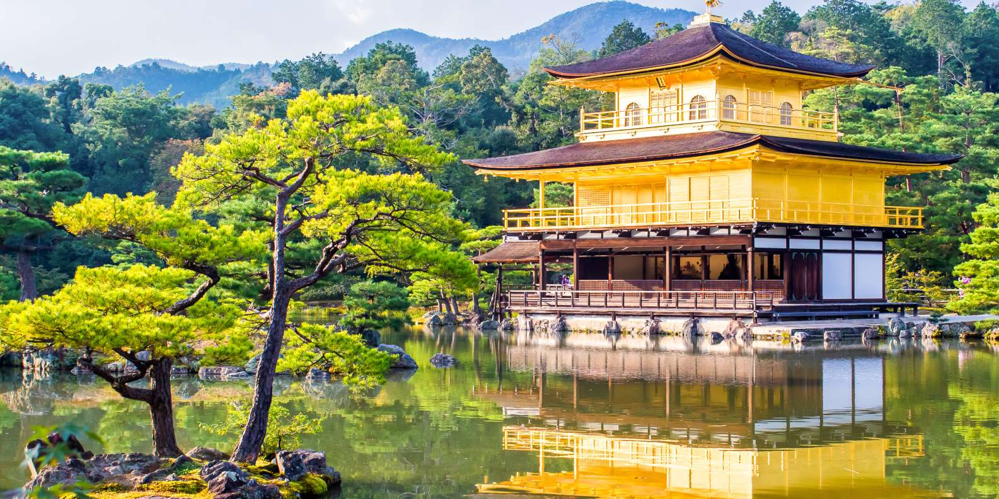
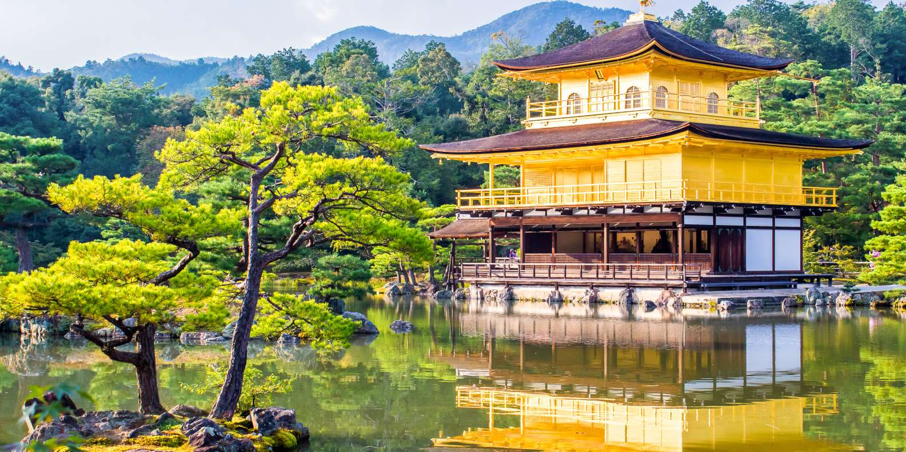
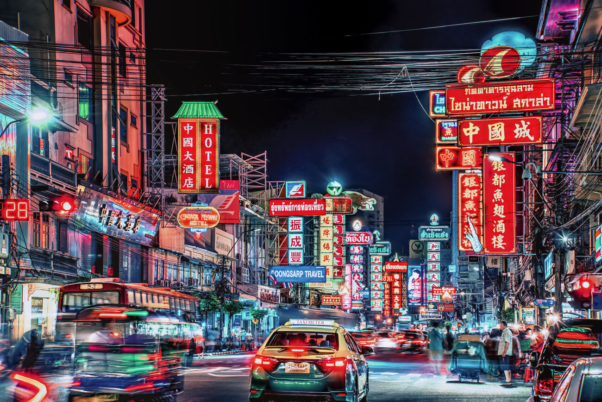
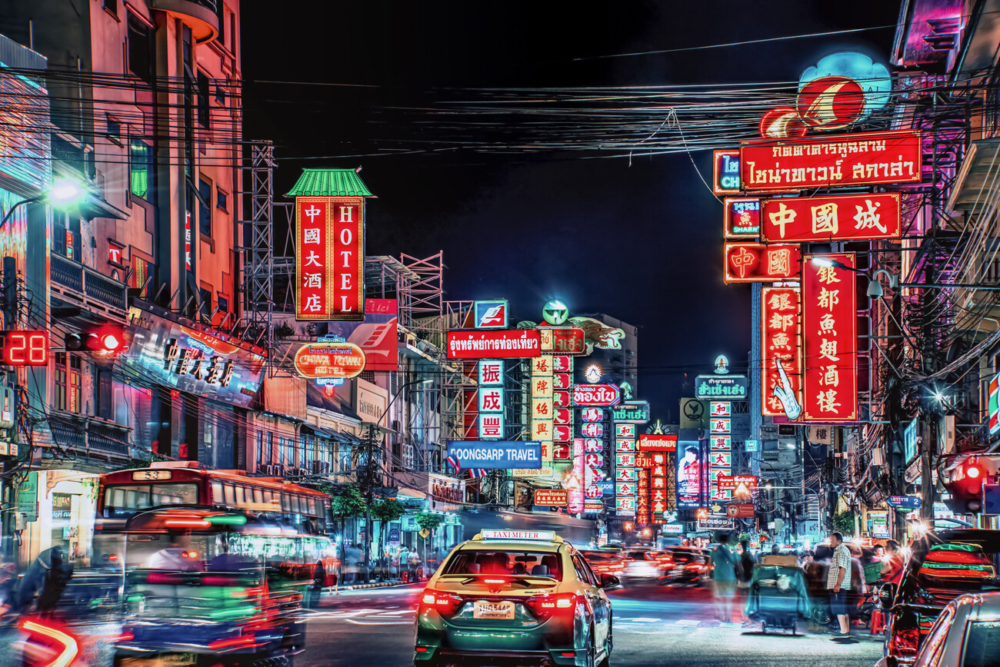

Monte Fuji
há muito tempo é considerado um lugar de importância espiritual e uma fonte de inspiração artística, japoneses acreditavam que o Monte Fuji, devido às suas consecutivas erupções, era um monte onde os deuses viviam e mostravam grande respeito por ele, venerando a distância.
Tokyo Skytree
A grande silhueta no horizonte da capital, a Tokyo Skytree, tem 634 metros de altura e proporciona vistas panorâmicas incríveis da cidade de Tóquio. Em um dia claro, pode-se quase ver o infinito, sendo um dos poucos lugares de onde se pode ver o Monte Fuji a partir de Tóquio.
Asakusa Kannon Temple
O templo budista, também conhecido por Asakusa Kannon Temple, foi concluído em 645 e por isso é o templo mais antigo da capital japonesa. Foi construído em homenagem à deusa budista da misericórdia Kannon,
Shinjuku Gyoen
É um parque criado originalmente como jardim da família imperial, além de ser bastante famoso como ponto de observação das flores de cerejeira durante março e abril.
Castelo de Osaka
É mais do que um famoso ponto de referência de Osaka: é um dos castelos mais respeitados em todo o Japão.
É um popular ponto de atracção durante a estação dos festivais, e especialmente durante a época das cerejeiras.
Kinkaku-ji
É patrimônio mundial, e é um dos lugares mais visitados em Kioto. O templo tem três andares, sendo que os dois últimos são todos cobertos com folhas de ouro. Repara que no topo do templo há uma ave Fenix.
Hiroshima Domu
É o epicentro da bomba e um dos importantes pontos turísticos do Japão. Hiroshima está entre as cidades mais visitadas do Japão. Você pode conhecer o Genbaku Dômu em um passeio de bicicleta em Hiroshima com guia local ou na excursão a pé pelos locais históricos de Hiroshima.
Chinatown
É uma região urbana que contém uma grande população de chineses dentro de uma sociedade não-chinesa. Pela região, é possível encontrar inúmeros Chinatown restaurantes de comida chinesa e lojas com diferentes artigos.
Museu Ghibli
É localizado em Mitaka, Tóquio, o Museu Ghibli e é um espaço de arte totalmente dedicado às obras do Studio Ghibli. Elaborado pelo próprio Hayao Miyazaki.



 

 
